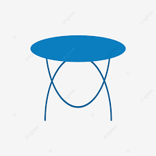

Калькулятор питания
Основные правила кормления собак
-
Количество
кормленийСобаку нужно кормить - 4 раза в день для щенков и 2 раза в день для взрослых собак. В период беременности, лактации и болезни собаку можно кормить 3-4 раза в сутки.
-

Не давать пищу
со стола.Человек употребляет пищу с различными специями и другими ингредиентами, которые могут быть особо вредными для организма собак.
-
Кормить в одно
и то же времяСобаку лучше кормить в одно и то же время по графику, например, за 1.5-2 часа до прогулки или спустя час после выгула.
-
Миска
для водыВ свободном доступе домашнего животного всегда должна быть чистая питьевая вода.
Чем кормить ?
-
Питание натуральными продуктами
Для многих владельцев оптимальным решением становится выбор натуральных продуктов для кормления собаки. Определяя такой вид питания, нужно сразу рассчитать необходимую суточную порцию для животного, учитывая его возраст и породу. Важно помнить, что в подаваемых продуктах должны быть все необходимые витамины, минералы и другие полезные микроэлементы в правильном соотношении.
Плюсы натурального кормления:
- Качественное питание натуральными продуктами обеспечит здоровую работу пищеварительного тракта
- Появляется возможность полностью исключить небезопасные добавки, красители, химические элементы и консерванты из рациона собаки
- При выявлении аллергии у собаки на конкретный продукт питания его можно быстро исключить из меню и заменить альтернативным продуктом, не вызывающим подобных реакций
-
Питание cухим кормом
Готовый промышленный корм – удобный продукт для кормления домашних животных, не требующий готовки и проведения расчетов составляющих компонентов, как этого требует кормление натуралкой. Существует два вида готовых кормов для собак – сухой в гранулах и влажный в консервах с различными вкусовыми добавками. Если для кормления питомца выбран сухой корм, очень важно, чтобы в доступе у животного всегда была вода, необходимая для усвоения гранулированной пищи.
Плюсы кормления сухим кормом:
- Большим плюсом сухого корма является то, что нет необходимости готовить
- Не нужно высчитывать объем разовой порции, ежедневная норма кормления рассчитана и указана на упаковке
- Огромное разнообразие кормов позволяет подобрать индивидуальное меню исходя из возраста, образа жизни и здоровья животного;
Инструкция по правильному кормлению
Как кормить собаку для удержания, набора или сброса массы?
Калькулятор
-
Здесь вы можете рассчитать оптимальный рацион для вашей собаки: